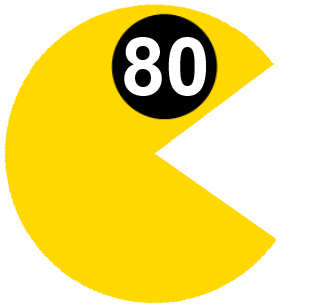

CSS with superpowers
Presentation powered by reveal.js.
David He
- Over 10 years of programming experience
- Twitter: @beetz12
- Email: davidhe@fastmail.com
- Github: beetz12
History of CSS
- Cascading Style Sheets
- Separation of structure from presentation
- Proposed in 1994 by Håkon Wium Lie
- Took 3 years to fully adopt
Lack of variables
a {
color: #8745fd;
}
nav {
background-color: #8745fd;
}
Unncessary duplication
p {
margin-bottom: 20px;
font-size: 14px;
line-height: 1.5;
}
footer {
margin-bottom: 20px;
font-size: 14px;
line-height: 1.5;
}
Maintainability
article {
border-top: 1px dashed #eee;
}
article header {
margin-bottom: 1.5em;
}
Enter Sass
What is SASS?
- Syntactically Awesome Stylesheets
- CSS pre-compiler
- Built on ruby
- Helps to write DRY code
Installation
gem install sass
sass --watch app/sass:public/stylesheets
Features
- Variables
- Mixins
- Nesting
- Importing
- And more...
Variables
$primary-color: #8745fd
a {
color: $primary-color
}
nav {
background-color: $primary-color
}
Mixins
@mixin default-type {
margin-bottom: 20px;
font-size: 14px;
line-height: 1.5;
}
p {
@include default-type;
}
footer {
@include default-type;
}
Nesting
-
SCSS Syntax
article { border-top: 1px dashed #eee; header { margin-bottom: 1.5em; } } -
CSS Output
article { border-top: 1px dashed #eee; } article header { margin-bottom: 1.5em; }
Importing
@import 'reset';
body {
font: 100% Helvetica, sans-serif;
background-color: #efefef;
}
More Features
- Inheritance (Not in LESS)
- Math Operations (Operators)
- Loops & Conditionals (Not in LESS)
- Color Functions
- Learn more at http://sass-lang.com/guide
SASS in Practice
- Prerequisites: gulp, gulp-sass, gulp watch.
npm install gulp gulp-sass gulp-watch --save-dev-
"devDependencies": { "gulp": "3.9.1", "gulp-sass": "2.2.0", "gulp-watch": "4.3.5" },
Gulpfile.js
var gulp = require('gulp'); var sass = require('gulp-sass'); var watch = require('gulp-watch'); gulp.task('sass', function () { return gulp.src('./sass/**/*.scss') .pipe(sass().on('error', sass.logError)) .pipe(gulp.dest('./css')); }); gulp.task('watch', ['sass'], function(done) { watch('app/**/*.scss', function(){ gulp.start('sass'); }); });